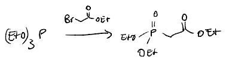

Namensreaktionen
Im Folgenden wird ein Überblick über die wichtigsten Namensreaktionen für die erste Zwischenklausur gegeben. Zunächst wird betrachtet, welche "Aktion" die jeweiligen Reaktionen ausüben (Deoxygenierung, Addition, etc.), um dann im Detail die Mechanismen in der Kürze zu betrachten.
Radikalische Namensreaktionen
"Aktionen" der Reaktionen
- Wohl-Ziegler Bromierung: Radikalische Bromierung unter Minimierung der elektrophilen Addition
- Entfernung funktioneller Gruppen mit Bu3SnH
- Barton McCombie Deoxygenierung: Deoxygenierung
- Barton McCombie Decarboxylierung: Decarboxylierung
- Kolbe Decarboxylierung: Decarboxylierung
- Appel Reaktion: Entfernung einer Hydroxygruppe
Reaktionen aufgeteilt nach Typen
- Halogenierung:
- Allyl-Alken: Wohl-Ziegler Bromierung
- Alkohol: Appel-Reaktion (Chlorierung)
- Entfernung funktioneller Gruppen
- Halogene: Bu3SnH
- Alkohole: Barton-McCombie Deoxygenierung
- Carboxygruppen: Barton-McCombie Decarboxylierung
Wohl-Ziegler Bromierung

Quelle: https://de-academic.com/pictures/dewiki/53/500px-wohl-ziegler.svg.png
Entfernung funktioneller Gruppen mit Bu3SnH

Quelle: https://lightcat-files.s3.amazonaws.com/problem_images/4e556f8dba20cd67-1714431677784.jpg
Barton-McCombie Deoxygenierung
Sehr ähnlich zu der Tschugajew Eliminierung, bei der statt radikalisch mit Hitze syn-eliminiert wird.

Quelle: https://nrochemistry.com/barton-mccombie-reaction/
Barton-McCombie Decarboxylierung

Mechanismus
Anmerkung: Der Mechanismus wird hier am Säurehalogenid gezeigt, da die Reaktion so schneller ablaufen wird (stärkeres positiv-polarisierte Kohlenstoffatom). Die Reaktion funktioniert ebenfalls an Carboxygruppen.


Quelle: https://de.wikipedia.org/wiki/Barton-Decarboxylierung
Kolbe-Decarboxylierung

Quelle: https://sdfestaticassets-eu-west-1.sciencedirectassets.com/shared-assets/103/topics/reaxys/rf_431/m_rf_431.svg
Nucleophile Substitutionsreaktionen
"Aktionen" der Reaktionen
- Tosylierung: Aktivierung - Fluchtgruppe
- Finkelstein: Umhalogenierung
- Appel: Substitution: Alkohol -> Halogen
- Mitsunobu: Umkehrung der Stereokonfiguration von Alkoholen
- Gabriel: Substitution: Alkylhalogenid -> Amin
- Williamson-Ether Synthese: Alkoxid + Alkylhalogenid -> Ether
- Michaelis-Arbuzov: Triphosphorester + Alkylhalogenid ->
Reaktionen aufgeteilt nach Typen
- Aktivierung
- Tosylierung
- Halogenierung:
- Finkelstein (Umhalogenierung)
- Appel
- Stereokonfiguration: Mitsunobu
- Ether: Williamson
- Phosphorylsynthese: Michaelis-Arbusov
Tosylierung - p-Toluolsulfonsäuregruppe

Quelle: https://www.chemistrysteps.com/wp-content/uploads/2020/01/Converting-Alcohols-to-Tosylates-the-Mechanism.png
Finkelstein-Reaktion

Quelle: https://de.m.wikipedia.org/wiki/Datei:Finkelstein_reaction_mechanism_V1.svg
Aceton wird hier als Lösungsmittel verwendet, da das entstehende Natriumchlorid sich nicht in diesem löst (aber die meisten organischen Substanzen sowie Natriumiodid schon).
Appel-Reaktion

Quelle: https://upload.wikimedia.org/wikipedia/commons/thumb/2/22/Appel-Reaktion_M-v3.svg/1920px-Appel-Reaktion_M-v3.svg.png
Mitsunobu-Reaktion

Quelle: https://www.name-reaction.com/mitsunobu-reaction
In der Vorlesung wurde die Benzoesäure genutzt, um das Stickstoff nach der Reaktion von dem DEAD (DiEthylAzoDicarboxylat) mit dem TPP (TriPhenylPhosphit) zu protonieren.

Quelle: Vorlesungsfolien
Gabriel Reaktion

Quelle: https://de.wikipedia.org/wiki/Gabriel-Synthese
Williamson-Ether Synthese

Quelle: https://www.name-reaction.com/williamson-ether-synthesis
In der Vorlesung wurde folgende Reaktion vorgestellt. Dabei dient Kaliumcarbonat als Base, um das Alkoxid zu erzeugen.

Quelle: Vorlesungsfolien
Michaelis-Arbusov

Quelle: https://en.wikipedia.org/wiki/Michaelis%E2%80%93Arbuzov_reaction

Quelle: Vorlesungsfolien
Eliminierungsreaktionen
Reaktionen aufgeteilt nach Typen
- syn-Eliminierung: Cope
- Dehydratisierung: Tschugajew
Cope Eliminierung

Quelle: https://www.chemistrysteps.com/wp-content/uploads/2021/12/Cope-elimination-mechanism.png
Tschugajew
Sehr ähnlich zu der Barton-McCombie Deoxygenierung, bei der statt Hitze radikalisch vorgegangen wird.


Quelle: https://de.wikipedia.org/wiki/Tschugajew-Reaktion
Additionen
"Aktion" der Reaktion
- Ungesättigte Carbonsäure + Iod + Base -> Iodlacton: Iodlactonisierung
- Alken + Persäure -> Epoxid: Prileschajew
Reaktionen aufgeteilt nach Typen
- syn-Addition
- syn-Hydroxylierung: Upjohn-Bishydroxylierung
- syn-Addition, anti-Markovnikov: Hydroborierung
- anti-Addition, Markovnikov-Produkt: elektrophile Addition
- Epoxid-Synthese: Prileschajew
- Lactonisierung: Iodlactonisierung
- Ringbildung:
- Phenol-Ring: Diels-Alder
- Triazol-Ring: Click Reaktion
Iodlactonisierung

Quelle: https://link.springer.com/chapter/10.1007/978-3-662-46180-8_6
Prileschajew

Quelle: https://de.wikipedia.org/wiki/Prileschajew-Reaktion
Upjohn-Bishydroxylierung

Quelle: https://www.organic-chemistry.org/namedreactions/upjohn-dihydroxylation.shtm

Quelle: Vorlesungsfolien
Hydroborierung

Quelle: Vorlesungsfolien

Quelle: https://de.m.wikipedia.org/wiki/Benutzer:Werderkli/Spielwiese/Hydroborierung
Click Reaktion

Quelle: Vorlesungsfolien